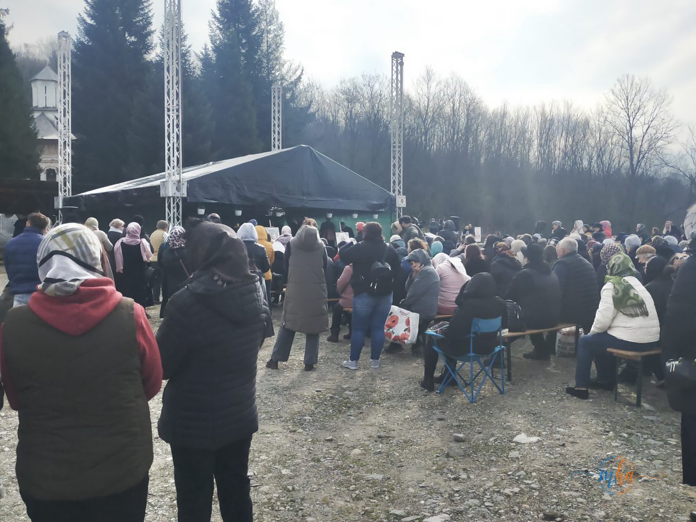
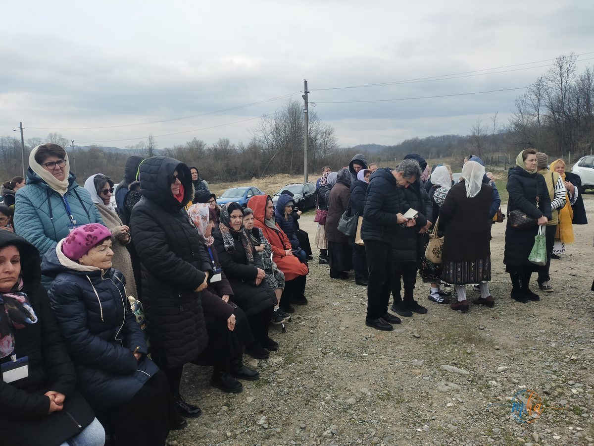
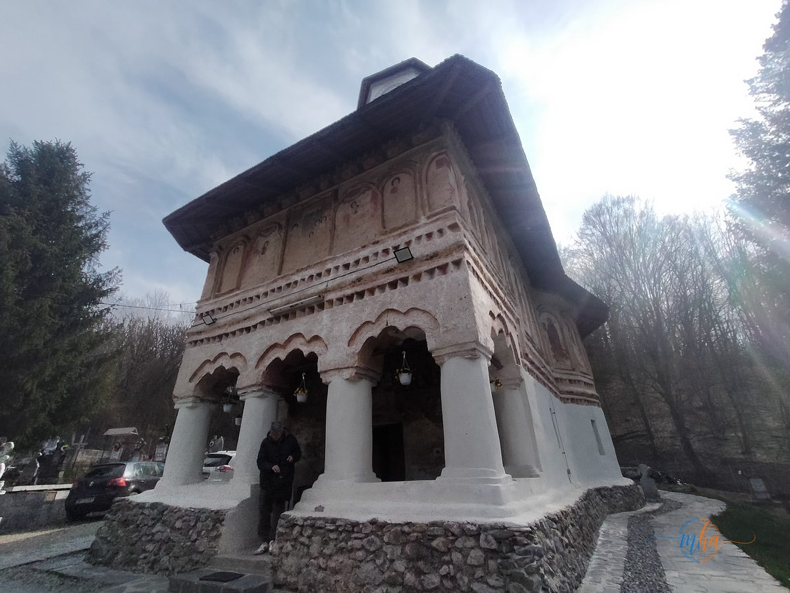
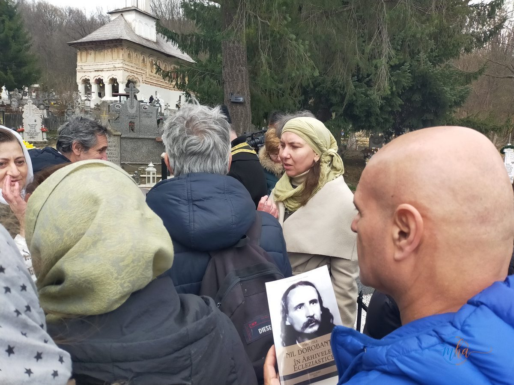
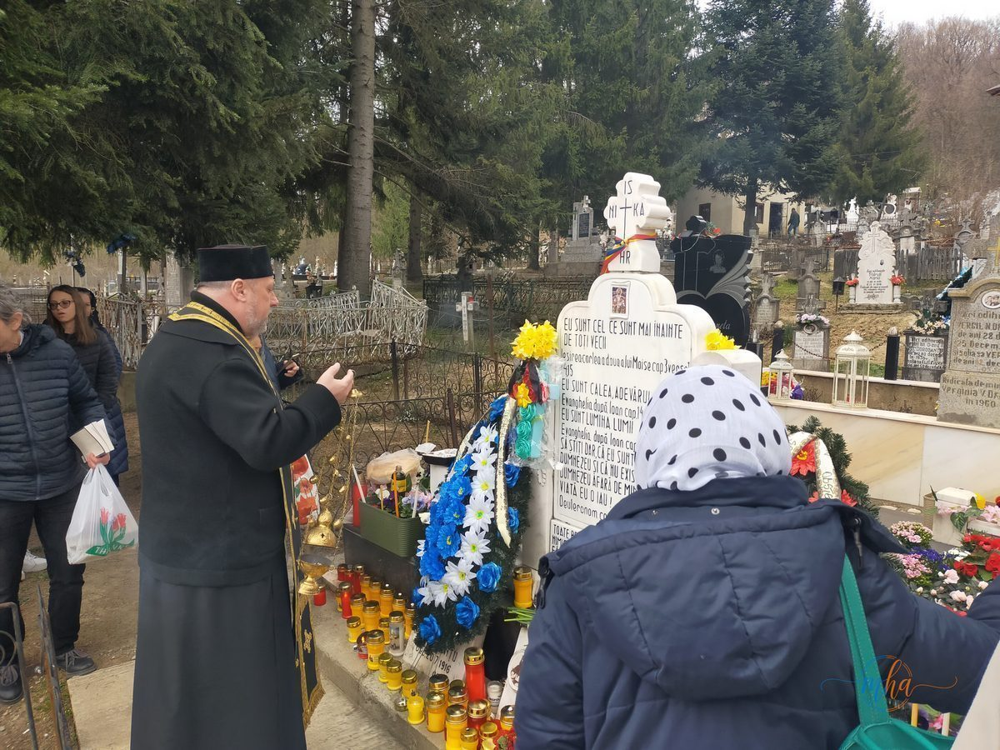

Pe 27 martie 2026, la împlinirea a 49 de ani de la mutarea la ceruri a Părintelui Nil Dorobanțu, sute de credincioși din Crainici și din împrejurimi s-au adunat în duh de rugăciune la biserica din sat, județul Mehedinți, pentru a-i cinsti memoria unui om care a trăit credința cu toată ființa sa — și a plătit prețul acestei mărturisiri.
„Cu ocazia împlinirii a 49 de ani de la mutarea la ceruri a Părintelui nostru Nil Dorobanțu, și anul acesta ne vom aduna în duh de rugăciune la biserica noastră din satul Crainici."

Sute de credincioși au răspuns chemării la rugăciune | Foto: MehedintiAzi.ro

Credincioși din Crainici și din localitățile vecine, adunați la slujbă | Foto: MehedintiAzi.ro
Nu este doar o slujbă de pomenire. Este un act de fidelitate față de un om care, cu prețul libertății și al suferinței trupești, a ales să rămână drept în fața lui Dumnezeu și a oamenilor. An de an, la această dată, credincioșii revin — unii din sat, alții de departe — aducând cu ei rugăciunea și recunoștința față de cel care a sfințit locul.
Un om al lui Dumnezeu format prin știință, rugăciune și suferință
Puțini sunt cei care, privind la viața unui singur om, pot zări deodată atâtea lumi: lumea armelor, a cărților, a chiliei și a temniței. Părintele Nil Dorobanțu le-a cunoscut pe toate. Înainte de a fi monah și mărturisitor, a fost sublocotenent la Vânătorii de Munte, în Regimentul de Gardă de la Predeal — un om al disciplinei și al onoarei militare, care a ales, mai apoi, o altă armă: rugăciunea.
Formarea sa intelectuală a fost cu adevărat excepțională pentru vremea sa. A absolvit, cu distincția Magna cum Laude, trei facultăți — Teologie, Filosofie și Litere — și a urmat patru ani de Drept, completând tabloul unui spirit enciclopedic. Era socotit, de cei care l-au cunoscut, un veritabil geniu. Nu s-a oprit nici acolo: a absolvit și Școala de Stenodactilografie și a intrat în doctorat la Teologie sub îndrumarea Părintelui Dumitru Stăniloae, unul dintre cei mai mari teologi ortodocși ai secolului al XX-lea.
Calea spre monahism a trecut prin Mănăstirea Cernica, unde a intrat în viața de obște luând numele de Nechifor. De acolo, drumul său duhovnicesc a continuat firesc și adânc: în 1948 a fost hirotonit ierodiacon la Zaclău (Tulcea), iar în 1949, ieromonah.
Momentul de cotitură în formarea sa duhovnicească a venit pe 5 august 1952, când, la recomandarea Părintelui Benedict Ghiuș, a fost tuns în schima mare la Mănăstirea Sihăstria, primind numele de Nil. Schivnicia i-a fost dată de ieroschimonahul Daniil Sandu Tudor — o filiație duhovnicească de mare profunzime, care îl leagă de Rugul Aprins și de curentul isihast românesc al epocii.

Biserica din Crainici, Mehedinți — locașul de cult în care Părintele Nil Dorobanțu a slujit și este pomenit anual | Foto: MehedintiAzi.ro
Slujitor al altarelor, dascăl al monahilor, păstor al sufletelor
Viața Părintelui Nil Dorobanțu a fost, din toate punctele de vedere, una a slujirii neîncetate. A purtat pe umeri răspunderi multiple și variate: a fost secretar eparhial, director de studii la seminarul monahal, stareț și duhovnic la o serie de mănăstiri din Moldova și din țară — Tarnița (Vrancea), Măgura Ocnei și Bogdana (Bacău), Nechit, Tarcău și Văratec (Neamț).
Oriunde a trecut, a lăsat urme adânci. Nu era un om al confortului, ci unul al misiunii. Mărturiile celor care l-au cunoscut îl descriu ca pe un preot care slujea zilnic Sfânta Liturghie, predica fără oprire, convertea, spovedea și împărtășea credincioșii — în vremuri când tocmai aceasta era socotit drept crimă.
„Mărturisirea lui Hristos, lucrarea sa apostolică de propovăduire a dreptei credințe, străbătând țara în lung și în lat cu Biserica în spinare, săvârșind zilnic Sfânta Liturghie, predicând, convertind, spovedind și împărtășind poporul, în acele vremuri de prigoană comunistă."
Temniță, tortură și achitare — mărturisitorul față-n față cu puterea comunistă
În 3 ianuarie 1956, aparatul represiv al statului comunist a pus capăt, cel puțin formal, misiunii sale apostolice: Părintele Nil Dorobanțu a fost arestat. A urmat o detenție de 120 de zile, fără judecată, fără condamnare, în condițiile inumane ale sistemului carceral al epocii — batjocură, tortură, umilință. Motivul oficial al întemniţării sale, consemnat în dosarele securității, era unul singur: „misticismul".
Cu alte cuvinte: credința. Rugăciunea. Liturghia zilnică. Propovăduirea Evangheliei. Tocmai acestea reprezentau, în ochii puterii comuniste, o amenințare care trebuia strivită.
Dar Dumnezeu a rânduit altfel. La 24 aprilie 1956, după ce a fost supus expertizei a 20 de medici, care l-au declarat sănătos, Părintele Nil Dorobanțu a fost judecat și achitat. Ieșit din temniță, a continuat să fie ceea ce a fost mereu: un slujitor al lui Dumnezeu și al oamenilor.
Întoarcerea acasă — studiu, smerenie și asceză la Crainici
După toate încercările — cărțile, altarele, temniița — Părintele Nil Dorobanțu s-a retras în satul natal, Crainici, județul Mehedinți. Acolo, departe de agitația lumii, a ales calea cea mai aspră și cea mai luminoasă totodată: studiul intelectual profund, smerenia și asceza severă. A trăit în ascuns, în tăcere, ca un isihast al câmpiei mehedințene, purtând în inimă râvna lui Dumnezeu și amintirea vie a suferințelor îndurate pentru El.
Crainiciul a devenit, astfel, nu doar locul de naștere, ci și locul de desăvârșire și de adormire al unui om care a ales, în toate etapele vieții sale, calea cea mai grea și cea mai adevărată.
Slujba de pomenire din 27 martie 2026 — sobor de preoți, credincioși și cartea vieții sale

Credincioși ținând în mâini cartea despre viața Părintelui Nil Dorobanțu, cu portretul acestuia pe copertă, în curtea bisericii din Crainici | Foto: MehedintiAzi.ro
Slujba de pomenire a fost oficiată de un sobor de preoți, în frunte cu Preotul Dumitru-Ionel Adam, care a ridicat rugăciuni pentru odihna sufletului celui ce a slujit necontenit lui Dumnezeu și oamenilor. Mulți dintre credincioșii prezenți țineau în mâini cartea despre viața Părintelui Nil Dorobanțu, cu portretul său pe copertă — o mărturie vie că amintirea sa nu pălește, ci crește în fiecare an.

Pr. Dumitru-Ionel Adam și credincioșii, în rugăciune la mormântul Părintelui Nil Dorobanțu din Crainici, împodobit cu flori și lumânări | Foto: MehedintiAzi.ro
La mormântul Părintelui, împodobit cu flori, lumânări și coroane, credincioșii s-au strâns în liniște și cu ochii plini de lacrimile recunoștinței. Nu pentru a consemna o cifră într-un calendar s-au adunat, ci pentru că memoria unui om drept nu se stinge. Ea crește, an de an, în rugăciunile celor care îl cinstesc.
Pomenirile anuale ale preoților care și-au dat viața pentru credință reprezintă una dintre cele mai profunde tradiții ale Bisericii Ortodoxe Române. Prin ele, comunitatea își reafirmă identitatea, își recunoaște înaintașii și îi oferă lui Dumnezeu mulțumire pentru darul unor astfel de oameni.
Veșnică să-i fie memoria!